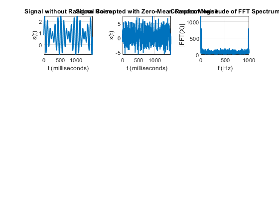
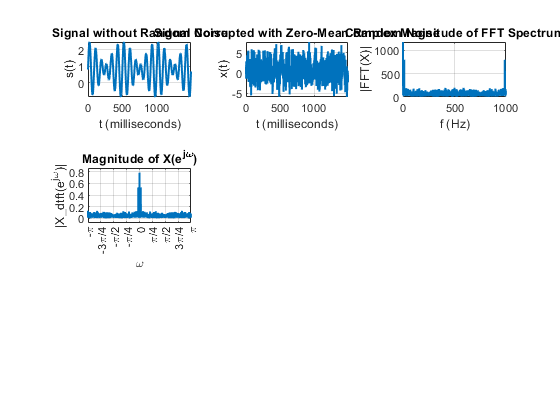
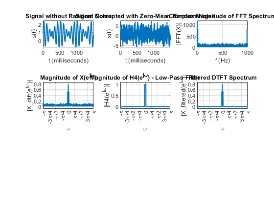
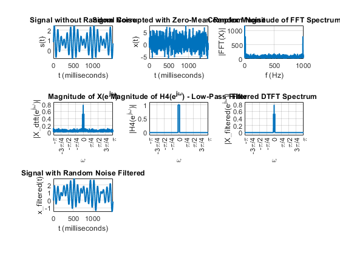

Contents
clc; clear; close all;
*Step 1: Generate the Signal*
Fs = 1000;
T = 1/Fs;
L = 1500;
t = (0:L-1)*T;
S = 0.8 + 0.7*sin(2*pi*10*t) + sin(2*pi*12*t);
figure;
subplot(3, 3, 1);
plot(1000*t, S, 'LineWidth', 1.5);
title("Signal without Random Noise");
xlabel("t (milliseconds)");
ylabel("s(t)");
grid on;
*Step 2: Add Noise*
X = S + 2*randn(size(t));
subplot(3, 3, 2);
plot(1000*t, X, 'LineWidth', 1.5);
title("Signal Corrupted with Zero-Mean Random Noise");
xlabel("t (milliseconds)");
ylabel("x(t)");
grid on;
*Step 3: Compute the FFT and Plot Its Magnitude*
Y = fft(X);
freqs = Fs/L*(0:L-1);
subplot(3, 3, 3);
plot(freqs, abs(Y), 'LineWidth', 1.5);
title("Complex Magnitude of FFT Spectrum");
xlabel("f (Hz)");
ylabel("|FFT(X)|");
grid on;

*Step 4: Compute the DTFT*
[X_dtft, omega] = dtft(X);
subplot(3, 3, 4);
magPlot(X_dtft, subplotMode=true, omega=omega);
title("Magnitude of X(e^{j\omega})");

*Step 5: Design and Apply Low-Pass Filter*
H4 = bestLowPassFilter(X_dtft, thresholdGain=0.25);
subplot(3, 3, 5);
magPlot(H4, subplotMode=true);
title("Magnitude of H4(e^{j\omega}) - Low-Pass Filter");
X_filtered = applyFilter(X_dtft, H4, applyOutlierRemoval=false);
subplot(3, 3, 6);
magPlot(X_filtered, subplotMode=true);
title("Filtered DTFT Spectrum");

*Step 6: Convert back to time domain*
X_ifft = idtft(X_filtered);
subplot(3, 3, 7);
plot(1000*t, real(X_ifft), 'LineWidth', 1.5);
title("Signal with Random Noise Filtered");
xlabel("t (milliseconds)");
ylabel("x\_filtered(t)");
grid on;

**Step 7: Optionally remove low magnitude frequencies for better resolution
X_filtered(abs(X_filtered) < 0.3) = 0;
subplot(3, 3, 8);
magPlot(X_filtered, subplotMode=true);
title("Gated DTFT Spectrum");
X_ifft = idtft(X_filtered);
subplot(3, 3, 9);
plot(1000*t, X_ifft, 'LineWidth', 1.5);
title("Signal with Spectral Gating");
xlabel("t (milliseconds)");
ylabel("x\_filtered(t)");
grid on;